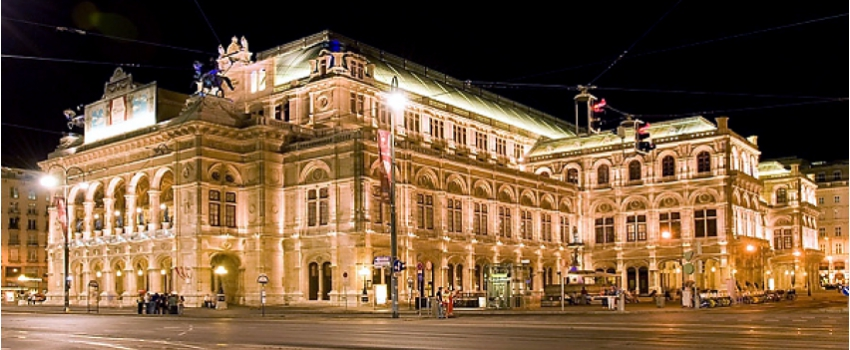
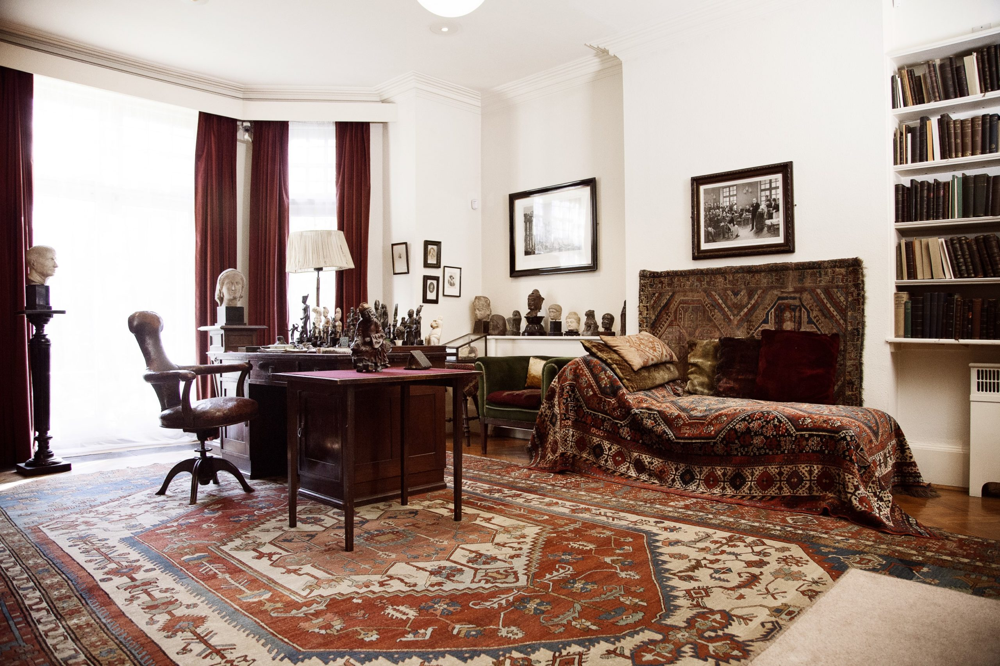

A Bécsi Operaház a világ egyik legnagyobb és legismertebb operaháza, amely az évad 280 napján számtalan magas színvonalú opera- és balettelőadással várja közönségét. Egyik legnagyobb különlegessége, hogy minden nap más és más előadást tudnak bemutatni, amivel a Bécsi Operaház teljesen egyedülállónak tekinthető a világon. Fellépői között különböző országok művészei találhatók, de nemzetközileg elismert rendezők és díszlettervezők is rendszeresen megfordulnak az intézményben. Érdemes főként áprilisban, májusban, júniusban és szeptemberben felkeresni a Bécsi Operaházat, hiszen ebben az időszakban 150-nél is több különböző opera- és balettelőadást lehet megtekinteni nem csak az operaházon belül, hanem a Herbert von Karajan téren felhúzott több mint 50 négyzetméteres óriási vászonról is, ami nem csak ingyenes, hanem egyben felejthetetlen élményt is nyújt a látogatók számára.
Bécs leghíresebb lakcíme a pszichoanalízis világába kalauzolja a látogatókat. Nemcsak hogy a nagy Sigmund Freud itt élt közel 50 éven át, hanem itt fektette le a modern mélylélektan alapjait is. Ma egy fantasztikus múzeum található itt. Berggasse 19, Bécs, Alsergrund. Aki Sigmund Freud nyomába ered, ide jut – a pszichoanalízis szülőhelyére. És akárcsak páciensei több mint 100 évvel korábban, ma is megállunk ajtója előtt, és becsengetünk a világhírű professzorhoz. Már belépéskor világossá válik: a Sigmund Freud Múzeum nem egy szokásos emlékhely – Ez a hely mindmáig megőrzi Freud szellemét. Ugyanakkor a kultúra és emberiesség a náci terror alatti elvesztésének emlékműveként is szolgál.
